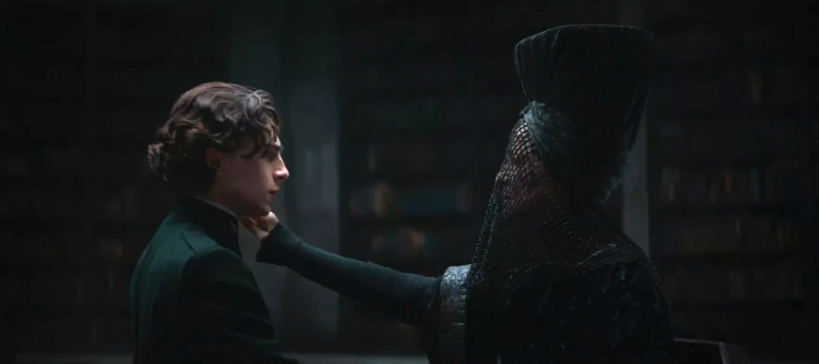

As if the upcoming epic science fiction film Dune directed by Denis Villeneuve wasn’t enough for the overjoyed fans of Frank Herbert’s Dune universe, it has been announced that Legendary Television will be producing a spin-off television series, Dune: The Sisterhood, for Warner Media's streaming service, HBO Max. The upcoming show received a straight-to-series order from the HBO's streaming offshoot.
Bene Gesserit, the secretive matriarchal order, is a key social, religious and political force in Dune universe.
The series, which will serve as a prequel to the new film adaptation, will focus on the secretive matriarchal order Bene Gesserit, a key religious, social and political force in Dune universe. The order is an exclusive sisterhood whose members train their bodies and minds through years of physical and mental conditioning to attain seemingly superhuman abilities and powers that can seem almost magical to outsiders. Acolytes who have acquired the full breadth of Bene Gesserit knowledge and skills are called Reverend Mothers within the organization’s ranks, with the most recent example being the Emperor's Truthsayer Reverend Mother Gaius Helen Mohiam, (as portrayed in the 2021 film adaptation by Charlotte Rampling).

To ensure the continuity between the film and series, Denis Villeneuve will direct the series’ pilot episode, with Jon Spaihts writing the screenplay and Dana Calvo serving as showrunner for the series. Villeneuve and Spaihts will also serve as executive producers alongside Brian Herbert, Kim Herbert (original book author Frank Herbert’s son and granddaughter respectively) and Byron Merritt. In November 2019, Spaihts left the series as script writer to focus more on the planned Dune sequel film, although he will remain as an executive producer. The series’ filming was planned to begin on 2 November 2020 on the sets in Budapest, Hungary and Jordan; however this was most likely pushed back due to the ongoing COVID-19 epidemic.